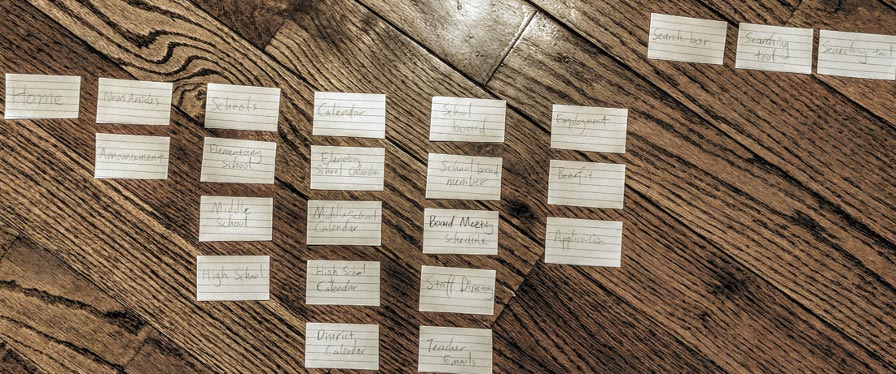

School Website Redesign
A project to redesign the Upper Darby School District website to improve UX and UI
Type
User Interaction Design class project
Date
Fall 2019
Role
User Research, Wireframing, Visual design, Prototyping
Challenge
- Improve the layout of pages
- Incorporate Upper Darby school color: gold and purple
- Better UI
- Unreasonable layout of major functions of the site
- Help students better navigate the site
User Research
- Mostly students
- Future employee because of employee vacancy
Card Sorting
- Analyzed User Preference
- The main structure from card sorting results was similar to my original sitemap
- A small difference in details but overall nothing need to be changed

New Site Map
- The organization of information is more intuitive
Build Prototype
- Used paper wireframe to brainstorm ideas
- Multiple revision from low-fidelity wireframe to hi-fidelity prototype
Results and Takeaways
-
Learned about possible bias during the design research process
-
The bias caused by the type of participants
- Best to use a large pool of diverse people
-
The interviewer can cause bias caused by the language use
- Be cautious and neutral about language use
- Avoid using opinions and feeling to unconsciously influence participant
-
The bias caused by the type of participants
- Learned about opinions might differ among people with different interest, personality, and background